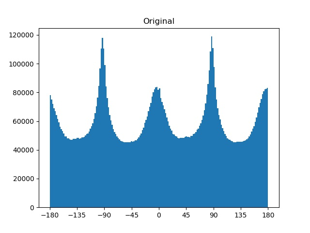
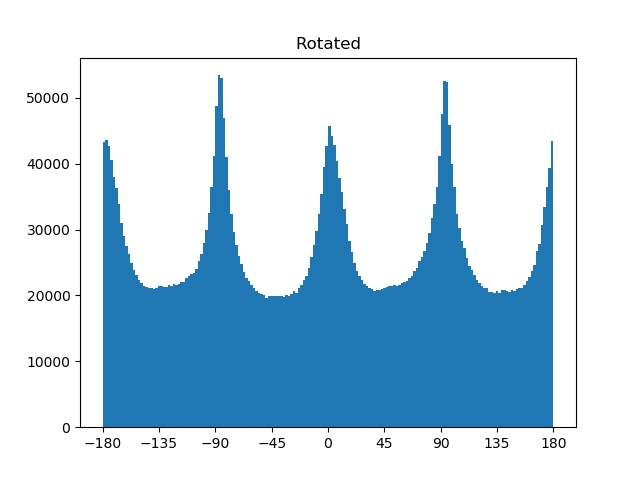
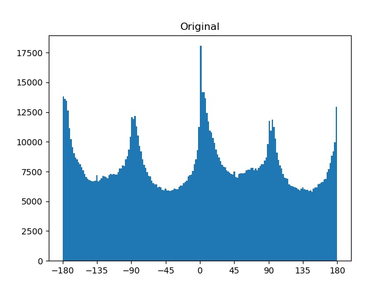

Here are the partial derivatives applied to the input with respect to the x and y directions, using the finite difference operator [1,-1]:
The gradient magnitude is calculated by taking the square root of the sums of the squares of the partial derivatives. Binarization follows to show only edges which exceed a certain threshold. Behold:
We can improve the quality of the detected edges by denoising our input through the application of a gaussian filter. Here is the result after using a gaussian blur:
We can do the same thing with a single convolution instead by creating a derivative of gaussian filter. We do this by convolving the gaussian filter with D_x and D_y (our finite difference operators from before) Here is what the resulting DoG filters looks like:
I verify that I get the same result as before below, as convolution operations are considered commutative and associative:
This part focuses on creating an algorithm to auto-straighten images. Statistically, straighter images have a preference for vertical and horizontal edges in most images (due to gravity!).
The result of this section will be to maximize the number of vertical and horizontal edges. How this is achieved is by first rotating the input through a certain range of rotations. We then sample the middle 60% of the image and calculate the gradient angle of the gaussian blurred image using arctan(dy/dx).
With the gradient angles, we can proceed with evaluating the frequency of horizontal/straight edges using orientation histograms with bins of 2, and then choosing the one with the most vertical and horizontal edges. For example if we were looking for 90 degree gradients, we would search within a range of two bins, so within [88,92]. Here are the results:
Facade:
Facade Histograms:
 
City:
City Histograms:

Treat:
Treat Histograms:
Board:
Board Histograms:
Board can be considered to be one of the more difficult cases due to the angle of the image. There are some spikes in the histogram due to the relatively large swathes of plain background, further compounded through gaussian blurring and the lower resolution of the input. The "straightened" version of the image may not be actually straight in the perspective of the surrounding perspective, but at least our chalkboard is straight now!
Image sharpening was performed by subtracting an image from its gaussian blurred version to yield a sharpness mask, which is then added back to the original image:
To create hybrid images, I would use the low frequencies for one input and the high frequencies for another input, and combine them together. A low-pass filter was applied using gaussian blur, and a high-pass filter was applied by subtracting out low frequencies from the second input image:
Below is the log magnitude of the fourier transforms for the two input images:
Here are some more fun examples:
The Gaussian and Laplacian stacks represent incremental amounts of blurring. Each layer of the Gaussian stack is blurred more than the previous, and each layer of the Laplacian stack is the difference of the Gaussian stack at the current level and the one from the previous layer. Here are some results from Dali's painting:
The Gaussian and Laplacian stacks of a blended image from Part 2:
To perform image blending, a mask is used to differentiate the border between the two images. A gaussian stack is used on the mask to help smoothen the transitions between the two images. Two laplacian stacks, one for each input is needed. We use the following formula

to determine how to blend each image from the laplacian stacks, into one final laplacian stack. The layers of the final stack are combined to yield the blended images. Behold the oraple:
More examples:
For reference, here is what it looks like in each layer of the final laplacian stack:
and let's end with a meme application of this hard work:
It's very cool to implement the computational photography tools I often use when editing photos like smooth blending or masks. It gives me a good introduction to how software I previously saw to be like black boxes, like Photoshop are developed.
I occasionally work on computer vision with ML applications, and this opportunity to understand how common library functions work has made me appreciate them in a new way.